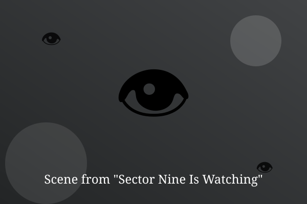

Chapter 1: Unrated

Every citizen of Sector Nine wore a number on their wrist. Kei's wrist glowed blank, and nobody could explain why.
Shops refused her. Doors stayed shut. Cameras turned to follow her down the street like sunflowers.
On the fourth day, a stranger slid a note into her hand: 'The blank ones are the only free ones.'
— End of Chapter —